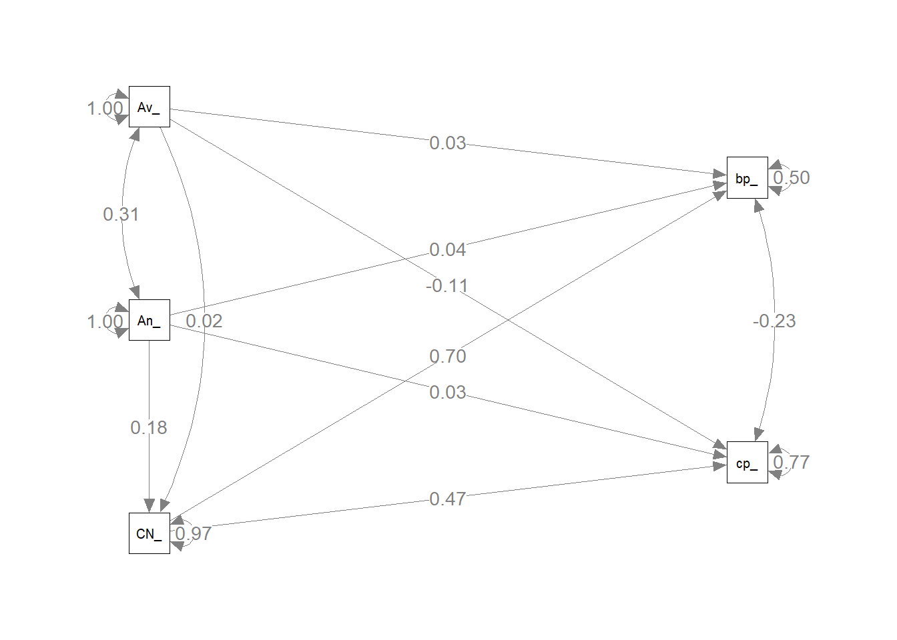
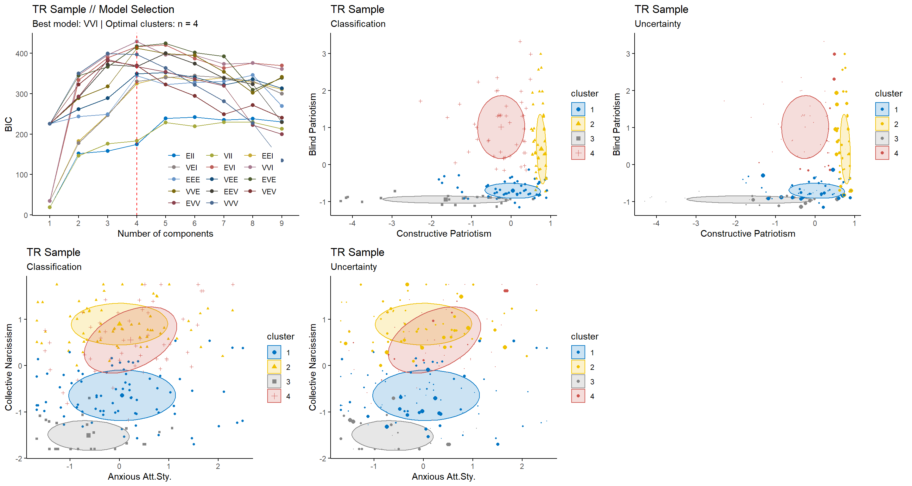
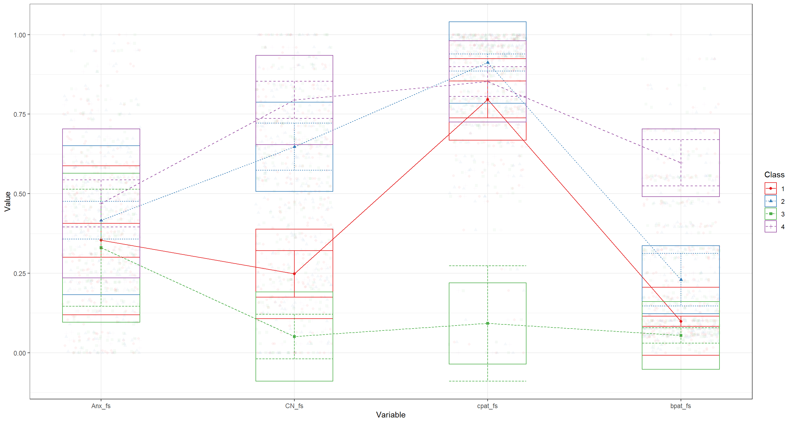
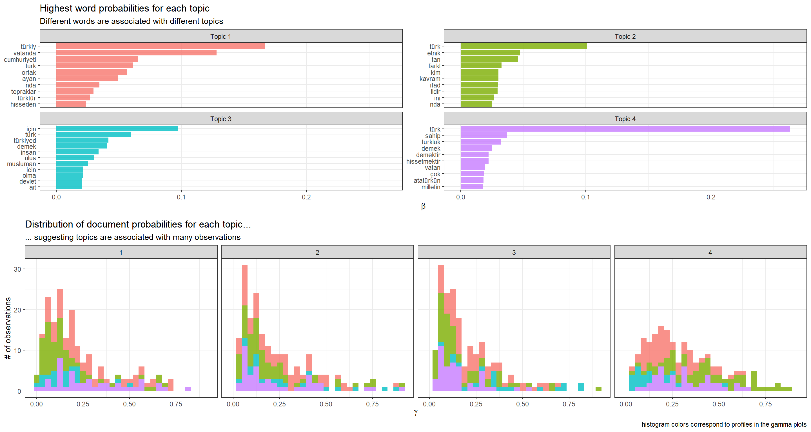
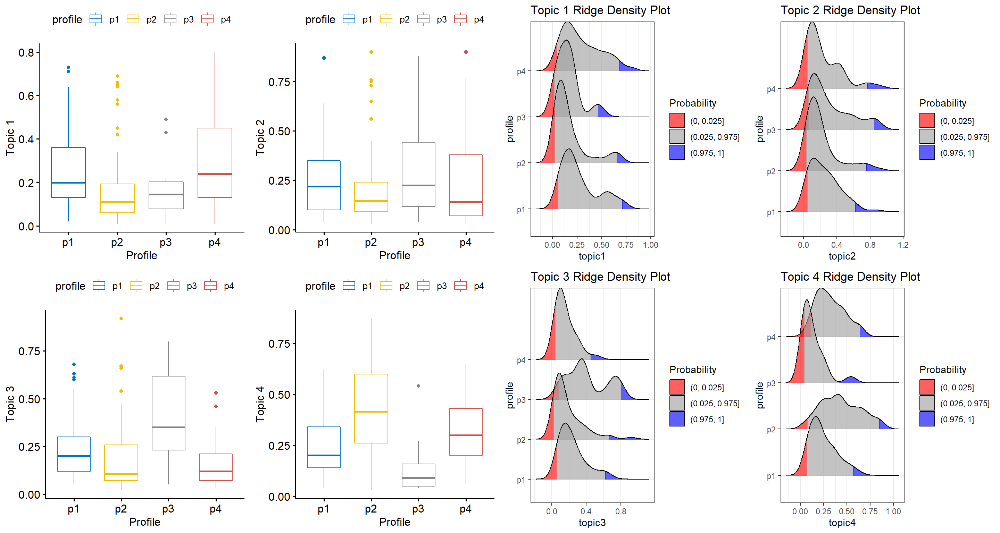
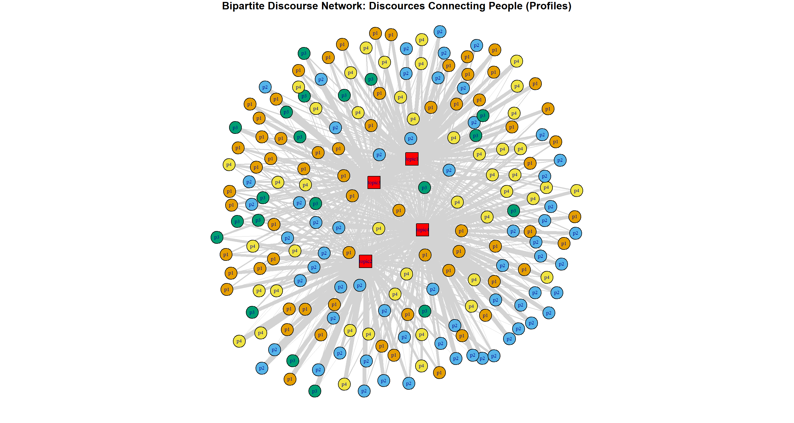

Let’s entertain an idea… an elaborate idea… that is people choose ideas, but ideas also choose people. This is known as the elective affinities – there is a “selective process by which ideas and their publics are bound together through forces of mutual attraction”. In other words, “there is a marketplace for things like ideologies, discourses, in which people are relatively free to choose ideologies and discourses that correspond to their own psychological needs” (Jost, 2017; Jost, Federico, & Napier, 2009).
The focus here is the discourses defined in the broadest sense: discourses
Nationalism as a discourse: Nationalism is best understood as a particular form of discourse that constructs an image for the nation (Ozkirimli, 2017). Since nationalism operates as a discourse, it provides stories/narratives/packages of information on collective identity, as well as collective memory, and social representations of history. Nationalism tells us who we are, what/where we have been via spoken and/or written account of connected events (Hammack & Pilecki, 2012, 2014).
Multiple nationalisms: Since we are talking about nationalism as a discourse, we are looking at plural stories that contest and negotiate with one another. According to Ozkirimli (2017), multiple discourses compete for hegemony to no avail because … well … stories/ideas/collective representations do not disappear into thin air. Stories/ideas/collective representations merge… they become less salient… they come back in the right context… Therefore, there can never be a hegemony of one discourse.
Nationalism and complex systems: Surely, nationalism is at the core of many severe global problems and catastrophes. However, that does not change the fact that it has been involved in shaping human history in one form or another for centuries now, which suggests that it might provide some secondary-benefits in organizing complex social/collective units. Kaufmann (2017) argues that nationalism is an emergent phenomenon using the workings of complexity; he discusses distributed knowledge and suggests that social-units like nations can harness the dispersed local and temporal information-packages of this distributed knowledge.
The ideas on nationalism(s) operating as discourses and nationalism being an emergent phenomenon and benefiting from distributed knowledge are all complementary to the elective affinities. So, the idea to entertain in this blog post is to model the elective affinities within the domain of nationalistic discourses. I do this by bringing together some techniques from psychometrics, structural topic modeling social network modeling.
The data here is a convenient Turkish sample from 2016. Participants responded to standardized scales; they also answered an open-ended question which asked them what it means to be Turkish to them. The following are the variables and their explanations. All values are normalized (ranging between 0-1) factor scores from CFA measurement models(, which are not shown here).
| Variable abbreviation | Construct | Explanation |
|---|---|---|
| Av_ | Avoidant attachment style | higher scores indicate being aloof and emotionally distant in close relationships |
| An_ | Anxious attachment style | higher scores indicate being clingy, rejection-sensitive in close relationships and a tendency to adopt the role of a pursuer |
| CN_ | Collective Narcissism | higher scores indicate an exaggerated emotional investment in “an unrealistic psychologically-fragile belief in the nation’s greatness contingent on external validation” (Cichocka, 2016; Golec de Zavala, 2017) |
| bp_ | Blind Patriotism | higher scores indicate an uncritical allegiance to the country |
| cp_ | Constructive Patriotism | higher scores indicate a constructively critical allegiance to the country and a desire for positive change |
Below is the path model that shows structural relationships. The model is straightforward: attachment style predicts collective narcissism, which in turn predicts patriotisms. For a more elaborate model and explanation (including other variables) as well as a country comparison, take a look at (Ardag, Cohrs, and Selck (2019).1

The significant coefficients are displayed in the table below.
| Latent Factor | Predictor | B | SE | Z | Beta | sig |
|---|---|---|---|---|---|---|
| cpat_fs | CN_fs | 0.32 | 0.05 | 6.17 | 0.47 | *** |
| cpat_fs | Anx_fs | 0.03 | 0.05 | 0.54 | 0.03 | |
| cpat_fs | Avd_fs | -0.11 | 0.06 | -1.77 | -0.11 | |
| bpat_fs | CN_fs | 0.55 | 0.04 | 14.71 | 0.70 | *** |
| bpat_fs | Anx_fs | 0.04 | 0.05 | 0.83 | 0.04 | |
| bpat_fs | Avd_fs | 0.03 | 0.05 | 0.63 | 0.03 | |
| CN_fs | Anx_fs | 0.21 | 0.09 | 2.42 | 0.18 | * |
| CN_fs | Avd_fs | 0.03 | 0.10 | 0.25 | 0.02 |
I take out the avoidant attachment style (no significant association) and proceed with latent profile analysis using the four variables.
The results look like the following. There are four estimated profiles.

Descriptive statistics are below. Profile 1 is low on blind patriotism; average on constructive patriotism; is spread across the range with collective narcissism and anxious style. Profile 2 is spread all over the range of blind patriotism & anxious attachment style; high on constructive patriotism & collective narcissism. Profile 3 is low on everything. Profile 4 is spread across blind & constructive patriotism ranges; has much overlap with Profile 2 on attachment style and collective narcissism traits.
| Anxious At.St. M(sD) | Collective Narciss. M(sD) | Constructive Pat. M(sD) | Blind Pat. M(sD) | |
|---|---|---|---|---|
| Profile 1 | 0.414 (0.26) | 0.326 (0.15) | 0.834 (0.13) | 0.100 (0.04) |
| Profile 2 | 0.401 (0.23) | 0.759 (0.12) | 0.973 (0.02) | 0.351 (0.21) |
| Profile 3 | 0.251 (0.19) | 0.082 (0.09) | 0.509 (0.30) | 0.047 (0.02) |
| Profile 4 | 0.454 (0.22) | 0.663 (0.20) | 0.777 (0.11) | 0.484 (0.19) |
## vars n mean sd median trimmed mad min max range skew kurtosis
## Anx_fs 1 217 0.40 0.24 0.40 0.39 0.25 0 1 1 0.31 -0.46
## CN_fs 2 217 0.51 0.28 0.54 0.51 0.33 0 1 1 -0.10 -1.05
## cpat_fs 3 217 0.83 0.19 0.89 0.86 0.14 0 1 1 -2.06 5.31
## bpat_fs 4 217 0.26 0.22 0.17 0.23 0.17 0 1 1 1.05 0.26
## se
## Anx_fs 0.02
## CN_fs 0.02
## cpat_fs 0.01
## bpat_fs 0.02In the next step, I use the profiles and some other covariates to estimate topics with structural topic modeling. Estimated topics should correspond to how these profiles perceive and frame their national identity. The results show that a four topics solution provide the most meaningful results, which is not surprising and new (again, refer to Ardag et al. 2018 for further details). I’m just finding/confirming what previous scholars were discussing about nationalistic discourses in Turkey (Bora, 2003, 2011; Özkırımlı, 2011).
Below are some highlights from the topic estimation.

The first topic frames Turkishness by referencing citizenship, geography, shared culture, and feeling (one interpretation of the founding ideology of Kemalism). The parts of the open responses that fall into the second topic make references to ethnicity. The third topic captures frames that make references to both ethnicity and religion. The framing in the fourth topic is close to topic 1; but there is much additional reference to the founding father of Turkey, Atatürk, and the tone and interpretation of Kemalism are different for this topic.
Elective affinities – people choosing ideas: The benefit of stm here is its mixed-group membership model. Since all open ended responses include words associated with all different estimated topics, we can extract relevant information on the estimated topics, and their covariates. Below is some selected relevant information on people choosing ideas.

In a nutshell, for topic 1, there are significant differences between p2 - p1, p4 - p2 and p4 - p3. Nothing is going on for topic 2. For topic 3, the significant differences are between p3 - p1, p3 - p2, and p4 - p3. Almost all profiles are significantly different from one another on topic 4… the only exception is p4 - p1 (, which still has p < 0.07). The boxplots and the ridged density plots are above.
Elective affinities – ideas choosing people: Social network modeling can give us insights here. I treat the topic proportions as an incidence matrix and plot a bipartite network of discourses connecting people. The centrality measures should provide us with an idea about the influence of different discourses. Here is how ideas choosing people part of elective affinities looks like.
Below is the network. Circle nodes are the participants of the survey; node color corresponds to the estimated latent profile. Red squares are the topics. The edge weights connecting the topics and participants are the topic proportions.

| Eigen vector centrality | Closeness | Betweenness | |
|---|---|---|---|
| Topic 1 | 0.70 | 4.28 | 0.834 |
| Topic 2 | 0.73 | 4.15 | 0.973 |
| Topic 3 | 0.64 | 4.54 | 0.509 |
| Topic 4 | 1.00 | 3.21 | 0.777 |
The most influential discourse is topic 1 (with eigenvector centrality value = 1) – the official founding ideology of Turkey (Kemalism) with its interpretation that (over-)praises Mustafa Kemal Atatürk. This is no surprise given that I have a biased convenience sample. Majority of the participants in the sample are urban, young, university students who self-reported to be secular and non-AKP supporters. It’s expected that they frame most of their Turkishness definition with the vocabulary of the Kemalist discourse. The second influential discourse is the one that makes references to Turkishness as an ethnic category (topic 2). Again, no surprises; ethnicity has always been a salient issue in Turkey, which has been instrumentalized in various ways to exclude non-Muslims and Kurds. This discourse has always had its ultra-nationalist/racist version and Kemalist version. The current governing party AKP has been transforming a mixture of the two to create its own hybrid. The third influencial discourse is topic 1: a more civic and cosmopolitan interpretation of Kemalism that emerged in the late 1980s; that is followed by the discourse that interbreeds ethnicity and religion (topic 3).
Closeness and betweenness centrality measures can also provide fruitful information about the influence of discourses; however, in this case, I think it will be susceptible to over-stretched interpretations.
What is the point: People internalize multiple discourses and possess the ideas that come with these discourses. The ideas might be in conflict and/or competition; ideas might be contradictory. People might be selective in the degree they internalize these different ideas; ideas permeate their hosts, nevertheless. Nationalist discourses might look like a messy patchwork of stories or like bad semantic salad. However, if you zoom out, you see that it functions for at least for two things.
If nationalism is really a thing with emergent properties, exploiting distributed knowledge and all that stuff, then perhaps there is reason to think that it also functions for itself. It creates multiple versions of itself – variation is always necessary for survival, then uses peoples/profiles as “vehichles” (Dawkins, 1976) for reproduction, spread, and recombination… We should not be surprised to observe multiple nationalistic discourses, incoherent, and conflicting narratives in any given nation/population… or across populations.
Of course, these results I present here have quite a few limitations. I already mentioned the sample bias. STM requires big text data – much larger corpus than the one I have here. Nevertheless, I think the whole modeling process is pretty useful if you want to entertain the idea of elective affinities. I think one can do a lot with bigger and more representative data for a population.
Ardag, M. M., Cohrs, J. C., & Selck, T. J. (2019). A Multi-Method Approach to National Identity: From Individual Level Attachment to National Attachment. SSRN. doi:http://dx.doi.org/10.2139/ssrn.3321204 Bora, T. (2003). Nationalist Discourses in Turkey. The South Atlantic Quarterly, 102(2-3), 433-451. Bora, T. (2011). Nationalist Discourses in Turkey. In A. Kadioglu & E. F. Keyman (Eds.), Symbiotic antagonisms : competing nationalisms in Turkey (pp. 57-81). Salt Lake City: University of Utah Press. Cichocka, A. (2016). Understanding defensive and secure in-group positivity: The role of collective narcissism. European Review of Social Psychology, 27(1), 283-317. doi:10.1080/10463283.2016.1252530 Dawkins, R. (1976). The selfish gene. Oxford: Oxford University Press. Golec de Zavala, A. (2017). Collective narcissism: antecedents and consequences of exaggeration of the in-group image. In A. Hermann, A. Brunell, & J. Foster (Eds.), The Handbook of Trait Narcissism: Key Advances, Research Methods, and Controversies: Springer. Hammack, P. L., & Pilecki, A. (2012). Narrative as a Root Metaphor for Political Psychology. Political Psychology, 33(1), 75-103. Hammack, P. L., & Pilecki, A. (2014). Methodological Approaches in Political Psychology: Discourse and Narrative. In P. Nesbitt-Larking, C. Kinnvall, & T. Capelos (Eds.), The Palgrave Handbook of Global Political Psychology (pp. 72-89). Hampshire: Palgrave Macmillan UK. Jost, J. T. (2017). The marketplace of ideology: “Elective affinities” in political psychology and their implications for consumer behavior. Journal of Consumer Psychology, 27(4), 502-520. doi:https://doi.org/10.1016/j.jcps.2017.07.003 Jost, J. T., Federico, C. M., & Napier, J. L. (2009). Political ideology: Its structure, functions, and elective affinities. Annual review of psychology, 60, 307-337. Kaufmann, E. (2017). Complexity and nationalism. Nations and Nationalism, 23(1), 6-25. doi:10.1111/nana.12270 Ozkirimli, U. (2017). Theories of Nationalism: A Critical Introduction: Macmillan Education UK. Özkırımlı, U. (2011). The Changing Nature of Nationalism in Turkey Actors, Discourses, and the Struggle for Hegemony. In A. Kadioglu & E. F. Keyman (Eds.), Symbiotic antagonisms : competing nationalisms in Turkey (pp. 82-100). Salt Lake City: University of Utah Press.
Attachment style is there because it is something deeply embedded within the individuals with genetic & environmental influences. These discourses have to impact something within the individual to be appealing to them. I think discourses hijack the psychological market place via acting upon attachment style – my study provides some empirical evidence for that.↩︎